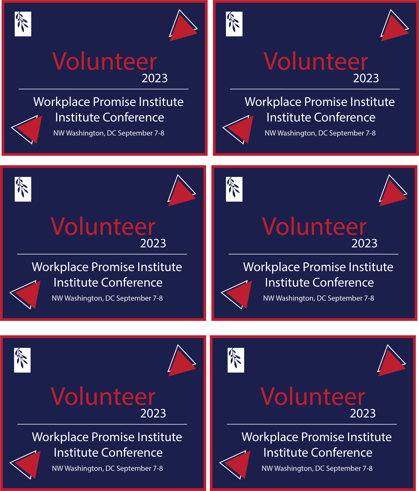

I designed this graphic for a badge for my internship. The Worplace Promise Institue was holding a conference and we had to design the handbooks, posters, and badges. I contributed by desiging the speaker badges, press badges and volunteer badges. Everything had a red white and blue theme, so I made sure to implement that within my designs. Picuted below is one of the many speaker badges I designed using Illustrator.

I designed these badges for the same conference held by the Worplace Promise Institue. As mentioned before, everything had a red white and blue theme, so I made sure to implement that with this design as well. Picuted below are several of the volunteer badges I designed using Illustrator.
